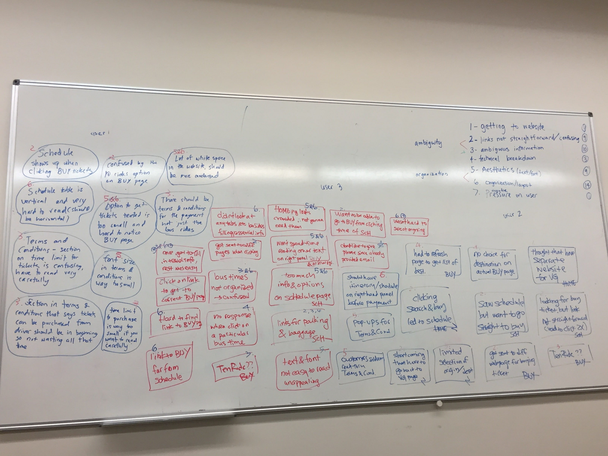
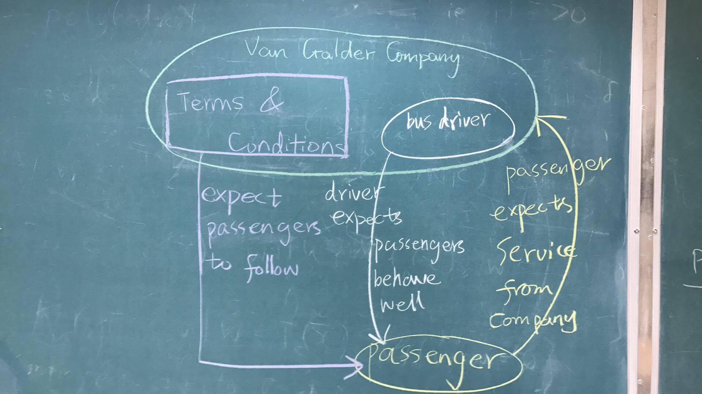
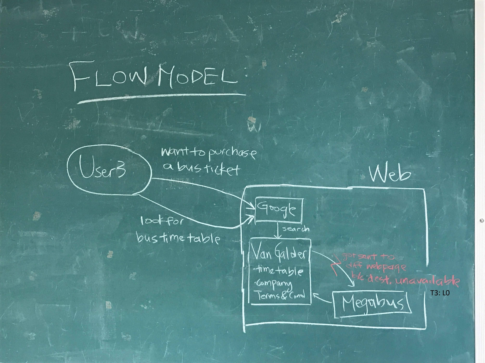

Affinity Diagram

Cultural Model

1. Master said: “There are two sides of freedom: the opportunity to possess, and the courage to give up.”
2. One day, Zilu asked the master: “what should I live for?” Rulan answered: “freedom is the ultimate goal of life. We study hard and work hard because we want to have more choices, such as a better house.” Master said: “I used to value freedom the most. However, I paid too much for my freedom. I gave up my family to travel as a vagrant.”
3. Yanhui asked: “Who are the freest people in the world?” Confucius answered: “Real freedom is not to be bounded by common views. The people who are the freest are the ones who know exactly what they want, who focus only on their goals, and try their best to achieve them no matter the cost. For instance, in your textbook The Moon and Sixpence, Strickland, an English shareholder, abandoned his son and his wife to follow his dream to pursue art and beauty. In my opinion, he is the freest man in the world.” Yanhui asked: “Master, do you think you are free?” Confucius answered: “Yes, I am free.”
4. Master said: “The freest people are the ones who are able to accept everything without letting decisions trouble them.”
Verse 1 and verse 2 show tension inherent in the word “freedom”. One kind of freedom is to possess. People struggle hard to have more choices and to gain more, which is the meaning of their lives. Additionally, there is also another kind of freedom. It is to give up and to discard things people already possessed. For example, Confucius abandoned his wife and his daughter to travel around China and to persuade emperors to take his advice and to rule the country better. Furthermore, verse 3 and 4 are the discussion about who is the freest people in the world. They further explain previous verses 1, and verse 2.
5. Zilu asked the master: “Why did Hillary Clinton lose the presidential election?” Master answered: “Hillary did some dirty work by her own choice. She never responded to Assange’s Wikileaks, so people no longer trusted her, and considered her as hypocrite. Her ignorance of rules and her acts on her own interests made her lose the election.” Zilu said: “But Trump did the same! He used to criticize nearly everything such as women’s bodies. Shouldn’t he be hated?” Master replied: “Yes. Trump says whatever he wants, which makes people hate him as well. However, he consciously knew what he was doing. He was not afraid of people hating him because of his behaviors. It was his way to take responsibility of what he said. You should not follow either of them. They both use freedom to pursue their own needs.”
6. Master said: “People who pursue freedom must have the ability to live under uncertainty and lack of control.”
7. Master said: “Some people are mistaken. Freedom is not doing whatever they want to. It is, however, the balance between needs, goals and responsibilities.”
8. Master said: “My friend Reed Hastings of Netflix says that responsible people thrive on freedom, and are worthy of freedom. I add to that: free people thrive on responsibility, and are worthy of responsibility.”
Verse 5 uses both Hillary Clinton and Donald Trump as bad examples to show the abuses of freedom. They both caused damaging effects on society. Hillary never explained her email controversy or claimed she need to take any responsibility. Trump is slightly better than Hillary. It is because Trump acts as he thinks. He knows his words will make people be disgusted with him, and he is able to be responsible for the hatred. Verse 6 further explains some constraints of freedom. For instance, the reason why Hillary lost the election is because she tried too hard to fulfill her ambition, and she abuses her power over her responsibility for the country. The difficulty when people are pursuing freedom is that they need to be able to live in uncertainty. Verse 7 further explains the true meaning of freedom. For many people, the definition of freedom is vague and contradictory. When people try to pursue their goals or fulfill needs in the name of freedom, they must also be able to take responsibility for their actions, which means they need to find the balance. As a result, the free people are the ones who can manage the relationship between freedom and responsibility well, which is what verse 8 says.